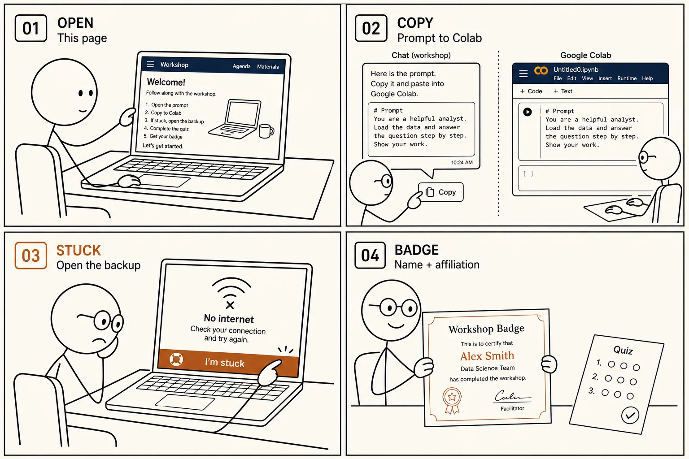

Session sheet
Build a core-loss model, one experiment at a time.
Explore the data, build an unscaled FNN, compare feature scaling, then train longer with validation. Uncertainty modeling is your homework.
Full workshop opens ahead of IEEE APEC 2027

Four experiments in the full workshop
- Data analysis: correlation and distributions
- Raw FNN (without feature scaling) vs generalized Steinmetz equation
- Scale inputs and the log target
- train longer and find proper epoch
In the full workshop, you’ll copy each prompt into your AI tool, then run its code in one Colab cell.
Preview the Lab